Computer Network - The Internet Protocol (IP)
1️⃣ IPv4 Datagram Format
The key fields in the IPv4 datagram are the following:
- Version number: These 4 bits specify the IP protocol version of the datagram.
- Header length: Because an IPv4 datagram can contain variable number of options, these 4 bits are needed to determine where in the IP datagram the payload actually begins.
- Type of service: The type of service (TOS) bits were included in the IPv4 header to allow different type of IP datagrams to be distinguished from each other.
- Datagram length: This is the total length of the IP datagram, measured in bytes.
- Identifier, flags, fragmentation offset: These three fields have to do with so-called IP fragmentation, when a large IP datagram is broken into several smaller IP datagrams which are then forwarded independently to the destination, where they are reassembled before their payload data is passed up to the transport layer at the destination host.
- Time-to-live (TTL): Ensure that datagrams do not circulate forever in the network.
- Protocol: This field is typically used only when an IP datagram reaches its final destination. The value of this field indicates the specific transport-layer protocol to which the data portion of this IP datagram should be passed.
- Header checksum: Aids a router in detecting bit errors in a received IP datagram.
- The reason why TCP/IP perform error checking at both the transport and network layers are:
- Only the IP header is checksummed at the IP layer, while the TCP/UDP checksum is computed over the entire TCP/UDP segment.
- TCP/UDP and IP do not necessarily both have to belong to the same protocol stack TCP. TCP can run over a different network-layer protocol and IP can carry data that will not be passed to TCP/UDP.
- The reason why TCP/IP perform error checking at both the transport and network layers are:
- Source and destination IP addresses: When a source creates a datagram, it inserts its IP address into the source IP address field and inserts the address of the ultimate destination into the destination IP address field.
- Options: Allows an IP header to be extended.
- Data (payload): Contains the transport-layer segment to be delivered to the destination.
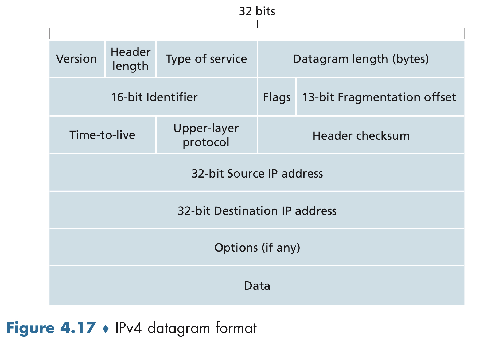
2️⃣ IPv4 Addressing
- Interface: The boundary between the host and the physical link.
- Dotted-decimal notation: Each byte of the address is written in its decimal form and is separated by a period from
other bytes in the address.
- E.g. The address 193.32.216.9 in binary notation is 11000001 00100000 11011000 00001001.
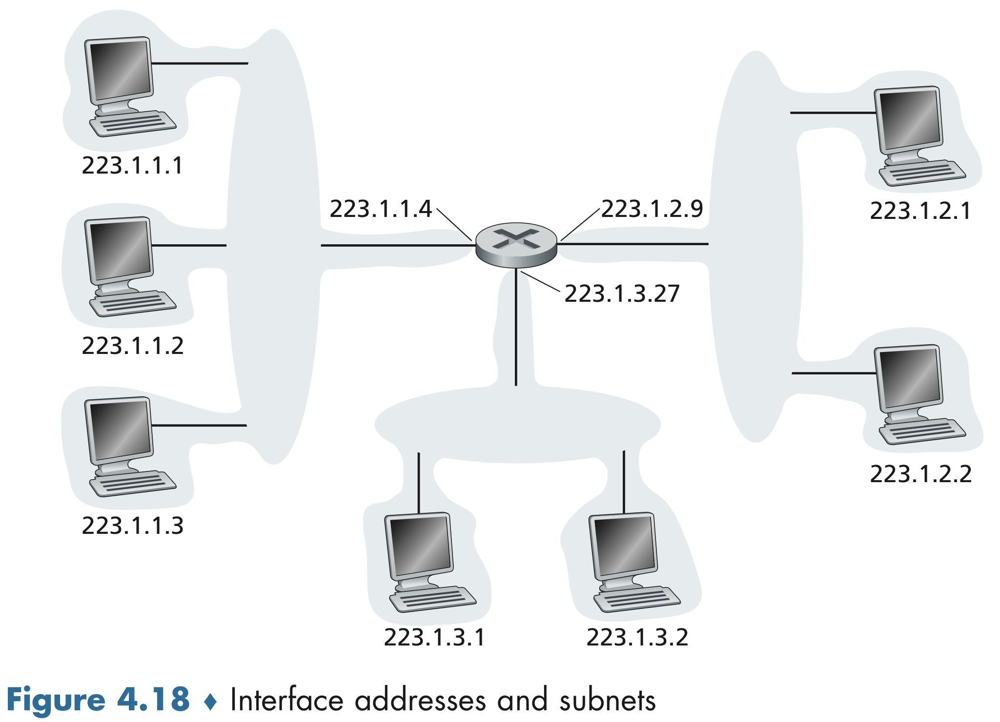
- Subnet: Network interconnecting three host interfaces and one router interface.
- Subnet mask Indicated by the leftmost 24 bits of the 32-bit quantity.
- E.g. In IP address 223.1.1.0/24, /24 is subnet mask.
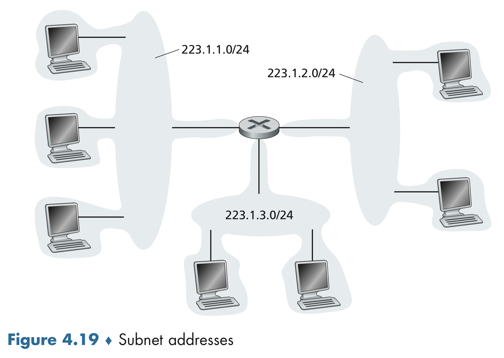
To determine the subnets, detach each interface from its host or router, creating islands of isolated networks, with interfaces terminating the end points of the isolated networks. Each of these isolated networks is called a subnet.
- Class Interdomain Routing (CIDR): The Internet’s address assignment strategy that generalizes the notion of subnet addressing.
- Network prefix: The x most significant bits of an address of the form a.b.c.d/x constitute the network portion of the IP address, and are often referred to as the prefix.
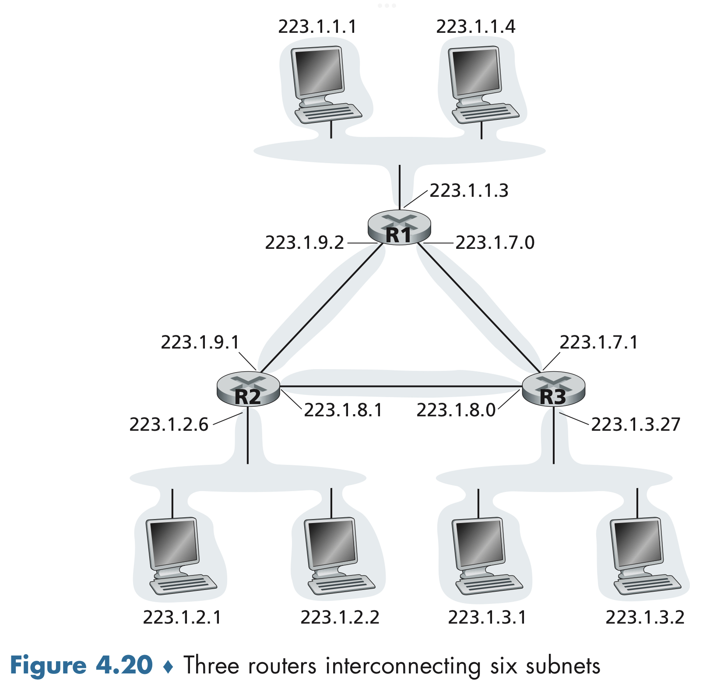
- Classful addressing: The network portions of an IP address which were constrained to be 8, 16, or 24 bits in length before CIDR was adapted.
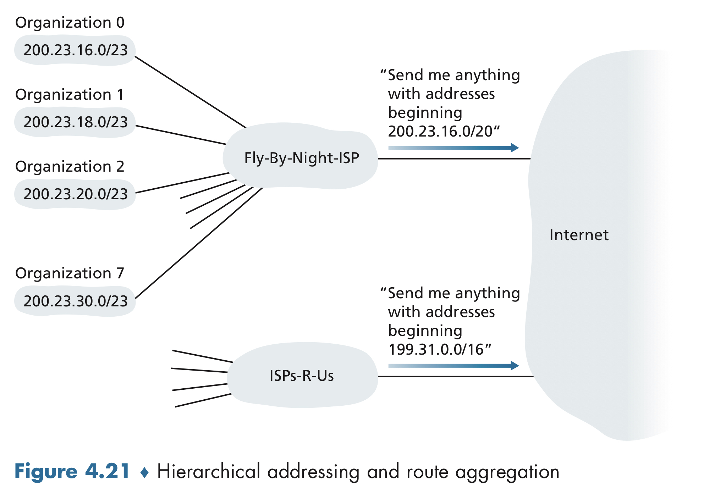
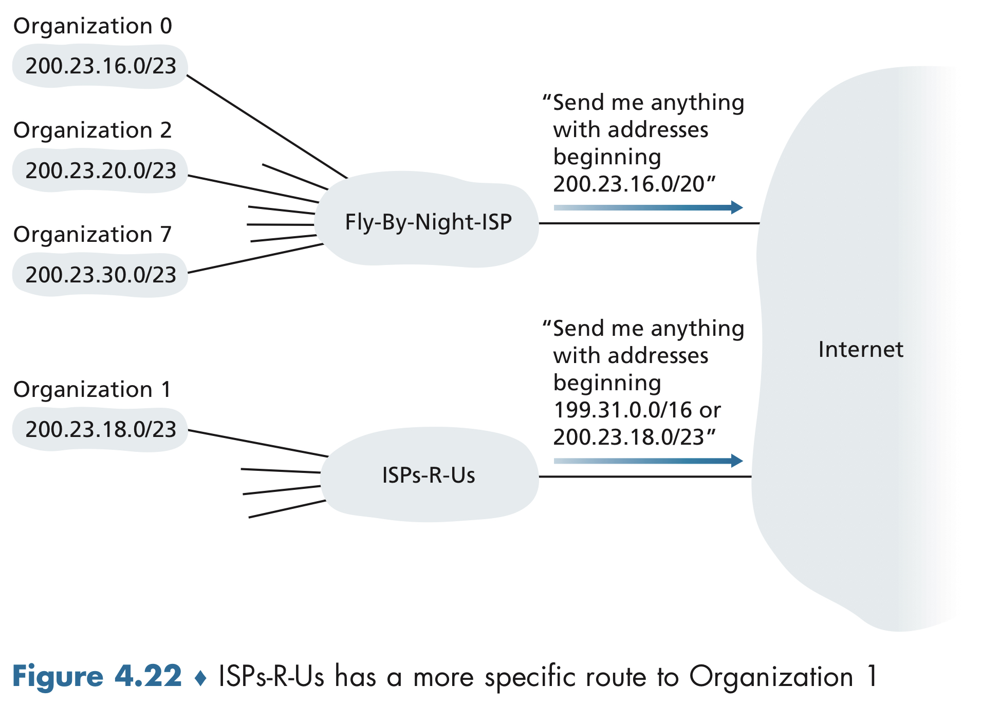
Obtaining a Block of Addresses
In order to obtain a block of IP addresses for use within an organization’s subnet, a network administrator might first its ISP, which would provide addresses from a larger block of addresses that had already been allocated to the ISP. For example, the ISP may itself have been allocated the address block 200.23.16.0/20. Ths ISP, in turn, could divide its address block into eight equal-sized contiguous address blocks and give one of these address blocks out to each of up to eight organizations that are supported by this ISP, as show below.
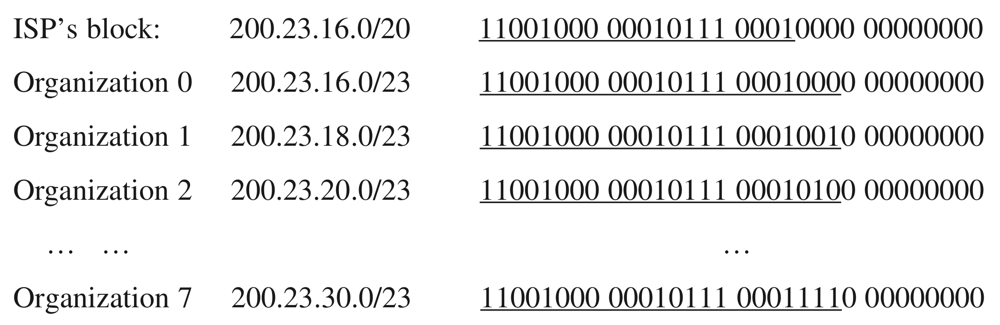
Obtaining a Host Address: The Dynamic Host Configuration Protocol
- Dynamic Host Configuration Protocol (DHCP): Allows a host to obtain an IP address automatically.
- Temporary IP address Allows IP address that will be different each time the host connects to the network.
- Plug-and-play a.k.a. Zeroconf protocol: DHCP’s ability to automate the network-related aspects of connecting a host into a network.
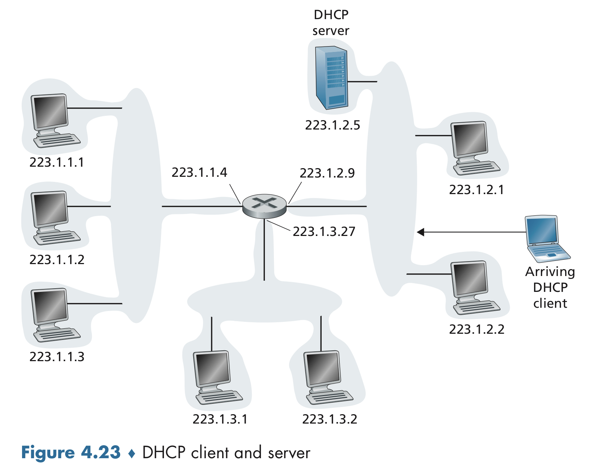
For a newly arriving host, the DHCP protocol is a four-step process which are:
- DHCP server discovery. The first task of a newly arriving host is to find a DHCP server with which to interact. This is done using a DHCP discover message, which a client wends within a UDP packet to port 67.
- DHCP server offer. A DHCP server receiving a DHCP discover message responds to the client with a DHCP offer message that is broadcast to all nodes on the subnet, using the IP broadcast address of 255.255.255.255. Since several DHCP servers can be present on the subnet, the client may find itself in the enviable position of being able to choose from among several offers. Each server offer message contains the transaction ID of the received discover message, the proposed IP address for the client, the network mask, and an IP address lease time - the amount of time for which the IP address will be valid.
- DHCP request. The newly arriving client will choose from among one or more server offers and respond to its selected offer with a DHCP request message, echoing back the configuration parameters.
- DHCP ACK. The server responds to the DHCP request message with a DHCP ACK message, confirming the requested parameters.
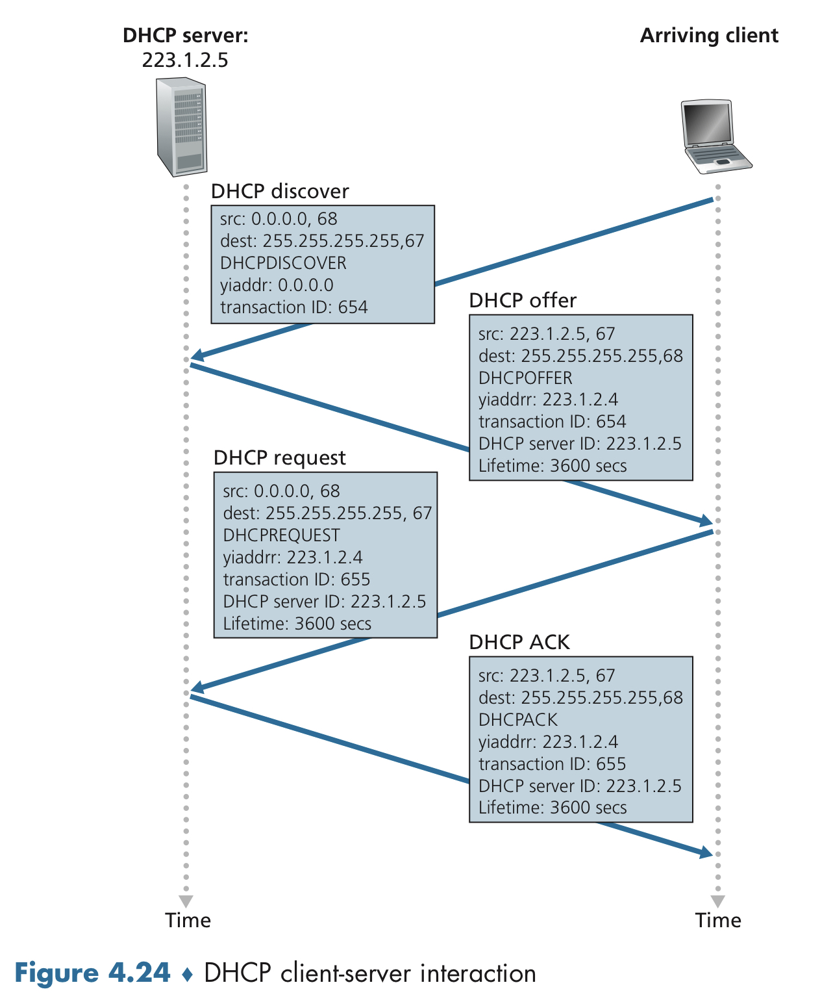
3️⃣ Network Address Translation (NAT)
- Private network a.k.a. realm with private addresses: Refers to a network whose addresses only have meaning to devices within that network.
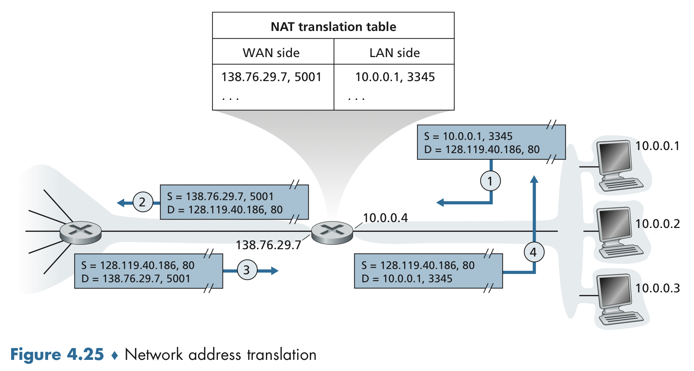
- NAT translation table: NAT router use this to solve the issue of all datagrams arriving at the NAT router from WAN with the same destination IP address.
- NAT traversal: Technical solutions for NAT to use port numbers for hosts.
4️⃣ IPv6
IPv6 Datagram Format
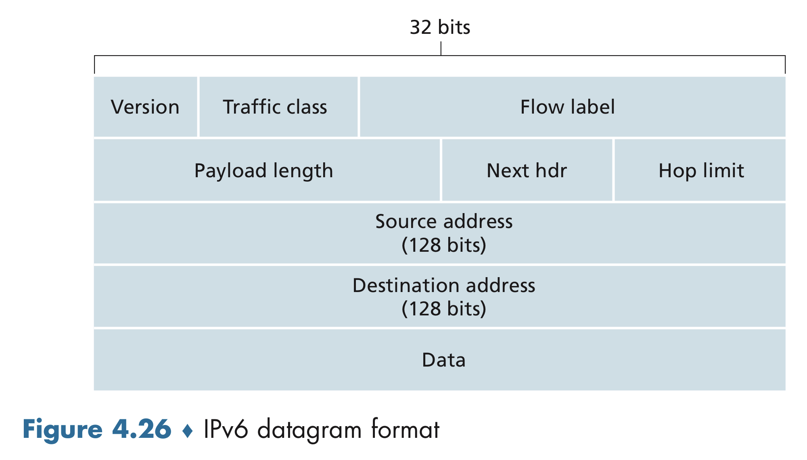
The most important changes introduced in IPv6 are evident in the datagram format:
- Expanded addressing capabilities. IPv6 increases the size of the IP address from 32 to 128 bits. This ensures that the world won’t run out of IP addresses. In addition to unicast and multicast addresses, IPv6 introduced a new type of address, called an anycast address, that allows a datagram to be delivered to any one of a group of hosts.
- A streamlined 40-byte header. The resulting 40-byte fixed-length header allows for faster processing of the IP datagram by a router.
- Flow labeling. IPv6 has an elusive definition of a flow. RFC 2460 states that this allows “labeling of packets belonging to particular flows for which the sender requests special handling, such as a non-default quality of service or real-time service.”
The simpler, more streamlined structure of the IPv6 datagram, compared to IPv4, are as follows:
- Version. The 4-bit field identifies the IP version number.
- Traffic class. The 8-bit traffic class field, like the TOS field in IPv4, can be used to give priority to certain datagrams within a flow, or it can be used to give priority to datagrams from certain applications over datagrams from other applications.
- Flow label. The 20-bit field that is used to identify a flow of datagrams.
- Payload length. The 16-bit value that is treated as an unsigned integer giving the number of bytes in the IPv6 datagrams following the fixed-length, 40-byte datagram header.
- Next header. The field that identifies the protocol to which the content of this datagram will be delivered.
- Hop limit. The contents of this field are decremented by one by each router that forwards the datagram.
- Source and destination addresses.
- Data. The payload portion of the IPv6 datagram.
Several fields appearing in the IPv4 datagram are no longer present in the IPv6 datagram:
- Fragmentation/reassembly. IPv6 does not allow for fragmentation and reassembly at intermediate routers; these operations can be performed only by the source and destination.
- Header checksum. Because the transport-layer and link-layer protocols in the Internet layers perform check-summing, the designers of IP probably felt that this functionality was sufficiently redundant in the network layer that it could be removed.
- Options. An options field is no longer a part of the standard IP header. However, the options field is one of the possible next headers pointed to from within the IPv6 header.
Transitioning from IPv4 to IPv6
- Tunneling: A key concept with applications in many other scenarios beyond IPv4-to-IPv6 transition, including wide use in the all-IP cellular networks.
- Tunnel: Intervening set of IPv4 routers between two IPv6 routers.
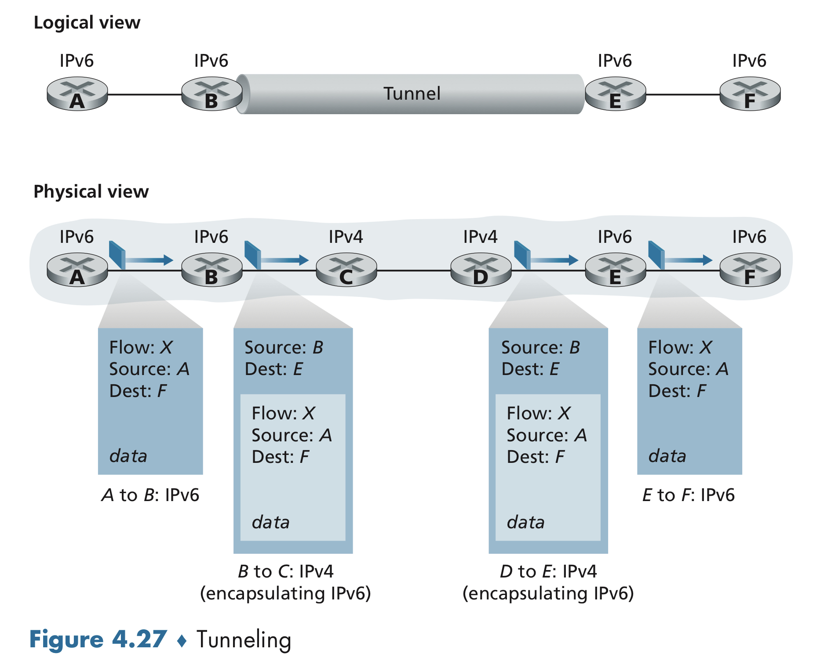
Reference
- Computer Networking 8th: A Top-Down Approach by James Kurose and Keith Ross
- Computer Network Lecture by Seungsik Choi in Incheon National University